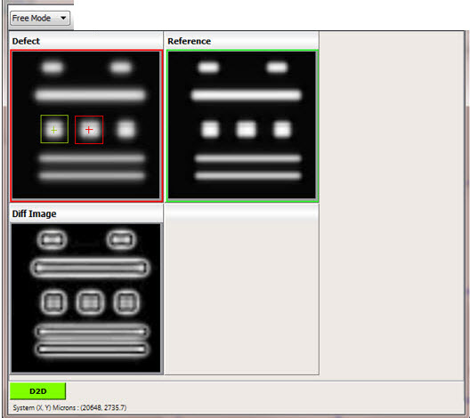

Contact Measurement
Contact Measurement works differently in Fixed Mode and Free Mode:
In Fixed Mode, Contact Measurement is computed on the defect image and the reference image. Contact Measurement boxes are displayed on the defect and reference image as shown in the following figure.
Figure 1. Contact Measurement in Fixed Mode
In Free Mode, Contact Measurement is computed on two locations on the same image. Two Contact Measurement boxes are displayed on the same image as shown in Figure 2. The green Contact Measurement box is considered as the reference Contact box in Fixed Mode and Free Mode, and the red Contact Measurement box is considered a defect contact box.
The Contact is detected on the reference and defect contact boxes, based on the settings specified using Settings > Set Contact Measurement Properties (see “Setting Contact Measurement Properties” for further information). The contact detected in the reference contact box is called a reference contact, and the contact detected on the defect contact box is called a defect contact.
Figure 2. Contact Measurement in Free Mode